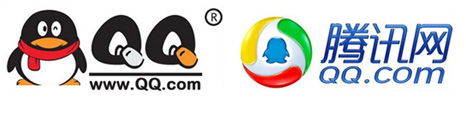
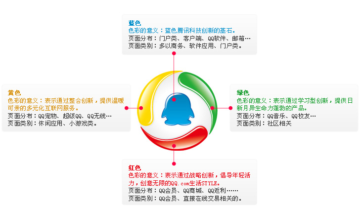
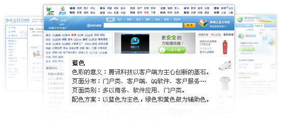
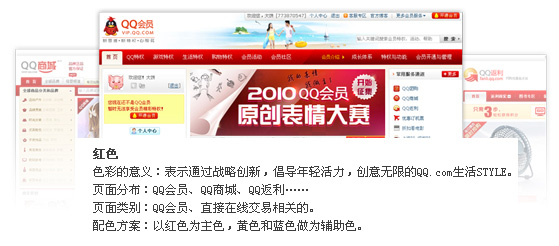
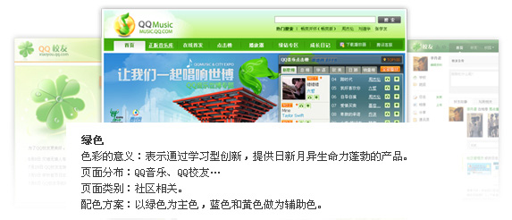
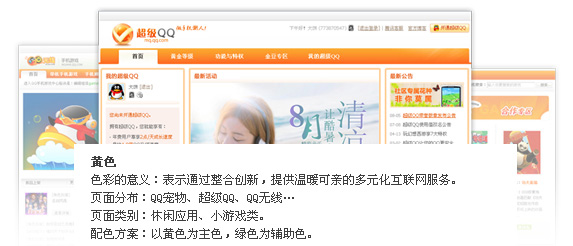
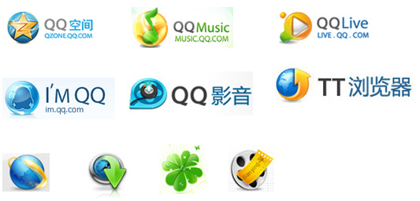

http://www.aliued.cn/?p=2815
一、腾讯LOGO
08年4月腾讯网（QQ.com）宣布启用新品牌标识，以绿、黄、红三色轨迹线环绕的小企鹅标识取代过去的QQ企鹅图案，腾讯传媒、QQ游戏等业务，都将同期统一更换新标识。
http://www.aliued.cn/wp-includes/js/tinymce/plugins/wordpress/img/trans.gif
http://www.aliued.cn/wp-includes/js/tinymce/plugins/wordpress/img/trans.gif

http://www.aliued.cn/wp-includes/js/tinymce/plugins/wordpress/img/trans.gif
http://www.aliued.cn/wp-includes/js/tinymce/plugins/wordpress/img/trans.gif

http://www.aliued.cn/wp-content/uploads/2010/09/1.jpg
二、从logo来看产品的视觉关系
色彩关联
通过产品视觉对比后，我们发现了一个有趣的现象：
1、大多腾讯的产品都会从蓝、绿、黄、红4种色彩中搭配使用（以蓝色为主心，分别有绿色、红色、黄色围绕，其中红色多用于会员商城交易类的，绿色多用于音乐、校友社区相关类的，蓝色主要用于门户、商务、软件应用类的，黄色多用于休闲小游戏类）
2、大多产品都会以这４种颜色的其中一种作为主色，然后分别选用４种中的２－３种作为辅助色。

http://www.aliued.cn/wp-content/uploads/2010/09/2.jpg

http://www.aliued.cn/wp-content/uploads/2010/09/3.jpg

http://www.aliued.cn/wp-content/uploads/2010/09/4.jpg
 http://www.aliued.cn/wp-content/uploads/2010/09/5.jpg
 http://www.aliued.cn/wp-content/uploads/2010/09/6.jpg
LOGO的设计关联
多以腾讯网LOGO作为基准进行创意设计。
色 彩：以蓝、红、绿、黄４种色彩中的一中做为主色调，并加以其中１－２色彩做为搭配使用。
处理手法：强水晶质感处理，并叠加光影动感效果，使LOGO视觉更加的炫目。
形 状：以腾讯网LOGO圆形为基准，做变形创意设计。

http://www.aliued.cn/wp-content/uploads/2010/09/7.jpg